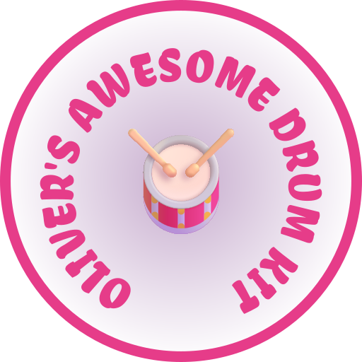

Tap, loop and build beats
Tap any instrument to play it!
Press and hold any instrument for half a second to start it looping automatically. Hold again to stop. Each instrument loops at its own speed — try layering a few together to build a beat!
Hit the same drum 3 times quickly to trigger a solo!
Alternate between two drums in an A → B → A → B pattern to trigger a duo solo!
Hit all 6 instruments at least once to trigger the classic drum solo!
Combos are disabled while any loop is running.